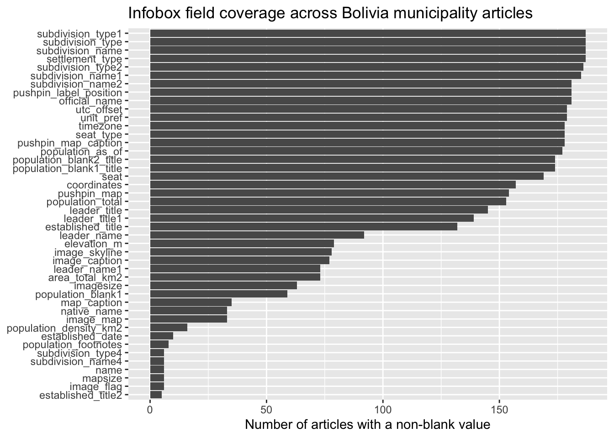
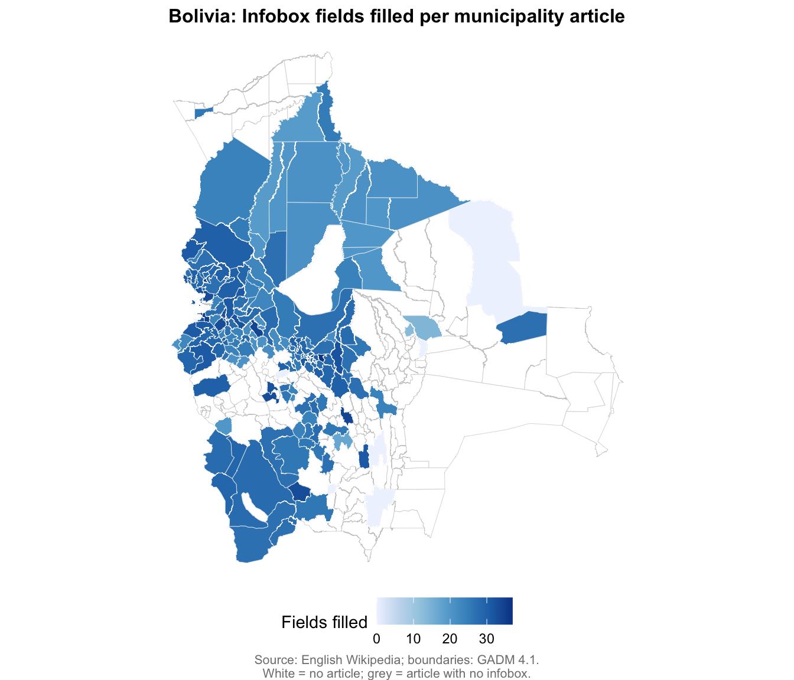
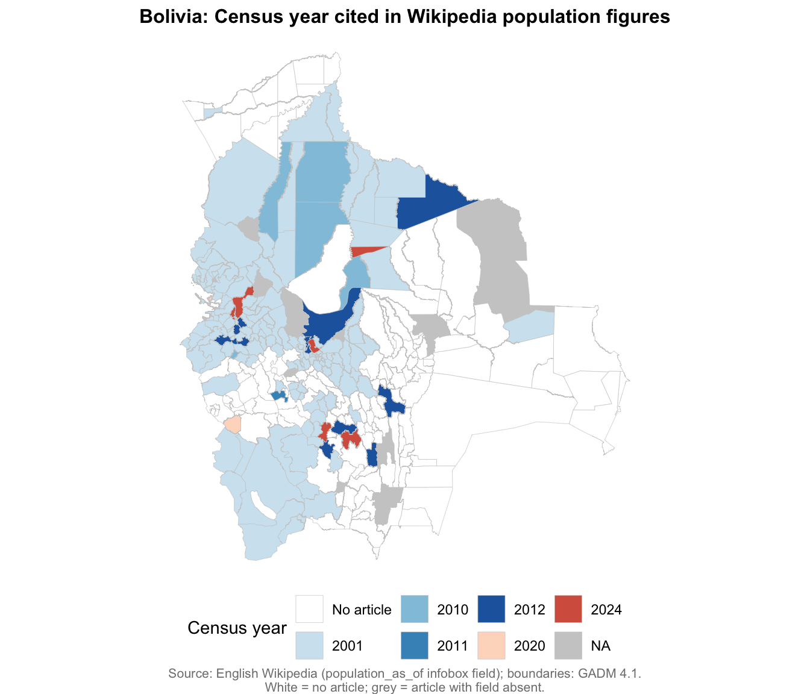
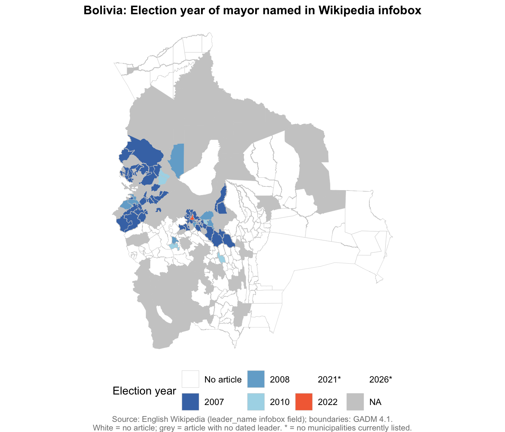

Code
library(tidyverse)
library(httr)
library(jsonlite)
library(WikipediR)
source("src/wikipedia-tools.R")
source("R/get_wikidata_instances.R")This document scrapes English Wikipedia for all pages in the Municipalities of Bolivia category tree, extracts structured information from each page, and compares the coverage with Wikidata’s inventory of Bolivian municipalities.
library(tidyverse)
library(httr)
library(jsonlite)
library(WikipediR)
source("src/wikipedia-tools.R")
source("R/get_wikidata_instances.R")We start by listing the subcategories of Category:Municipalities of Bolivia, keeping only those whose name begins with “Municipalities” (i.e. excluding “Categories by city in Bolivia” and other non-municipal subcategories).
top_cat <- "Category:Municipalities_of_Bolivia"
subcats <- get_subcategories(top_cat)
subcats# A tibble: 10 × 3
pageid ns title
<int> <int> <chr>
1 43238686 14 Category:Categories by city in Bolivia
2 28287094 14 Category:Municipalities of Beni Department
3 28287445 14 Category:Municipalities of Chuquisaca Department
4 24862658 14 Category:Municipalities of Cochabamba Department
5 34083058 14 Category:Municipalities of La Paz Department (Bolivia)
6 28277737 14 Category:Municipalities of Oruro Department
7 28278060 14 Category:Municipalities of Pando Department
8 28277725 14 Category:Municipalities of Potosí Department
9 34083142 14 Category:Municipalities of Santa Cruz Department
10 82624174 14 Category:Municipalities of Tarija Department # Keep only subcategories beginning with "Municipalities"
muni_subcats <- subcats |>
filter(str_detect(title, "^Category:Municipalities"))
muni_subcats# A tibble: 9 × 3
pageid ns title
<int> <int> <chr>
1 28287094 14 Category:Municipalities of Beni Department
2 28287445 14 Category:Municipalities of Chuquisaca Department
3 24862658 14 Category:Municipalities of Cochabamba Department
4 34083058 14 Category:Municipalities of La Paz Department (Bolivia)
5 28277737 14 Category:Municipalities of Oruro Department
6 28278060 14 Category:Municipalities of Pando Department
7 28277725 14 Category:Municipalities of Potosí Department
8 34083142 14 Category:Municipalities of Santa Cruz Department
9 82624174 14 Category:Municipalities of Tarija Department Now collect all article pages from each subcategory, plus any pages listed directly under the top-level category.
# Pages directly in the top-level category
top_pages <- get_category_pages(top_cat)
# Pages in each "Municipalities of ..." subcategory
subcat_pages <- map_dfr(muni_subcats$title, function(cat) {
Sys.sleep(0.3)
get_category_pages(cat) |>
mutate(source_category = cat)
})
# Combine and deduplicate
all_muni_pages <- bind_rows(
top_pages |> mutate(source_category = top_cat),
subcat_pages
) |>
distinct(title, .keep_all = TRUE) |>
# Drop any remaining category or template pages
filter(ns == 0)
message(nrow(all_muni_pages), " unique municipality article pages found")195 unique municipality article pages foundpage_info <- get_page_info_batch(all_muni_pages$title)
muni_df <- all_muni_pages |>
select(-pageid) |>
left_join(page_info, by = "title")We cache each page’s raw wikitext to wikipedia-pages/bolivia/ so that subsequent runs don’t re-download.
cache_dir <- "wikipedia-pages/bolivia"
dir.create(cache_dir, showWarnings = FALSE, recursive = TRUE)
# Fetch / load cached wikitext for every page
muni_df <- muni_df |>
mutate(wikitext = map_chr(title, function(t) {
txt <- cache_wikitext(t, cache_dir)
if (is.null(txt)) NA_character_ else txt
}, .progress = "Fetching wikitext"))
muni_df <- muni_df |>
mutate(wikipedia_url = paste0("https://en.wikipedia.org/wiki/", gsub(" ", "_", title)))muni_df <- muni_df |>
mutate(
n_chars = nchar(wikitext),
n_citations = map_int(wikitext, count_citations),
n_refs = map_int(wikitext, count_refs),
census_years = map(wikitext, extract_census_years),
census_years_str = map_chr(census_years, ~ paste(.x, collapse = ", "))
)Parse the main infobox from each article and extract every key–value pair. We first collect all infobox data as a list column, then pivot the most common fields into their own columns.
muni_df <- muni_df |>
mutate(
infobox_wikitext = map_chr(wikitext, function(w) {
txt <- extract_infobox_wikitext(w)
if (is.null(txt)) NA_character_ else txt
}),
infobox_raw = map(wikitext, extract_infobox)
)
is_blank <- \(v) v == "" | trimws(v) == "" | startsWith(trimws(v), "<!--")
muni_df <- muni_df |>
mutate(infobox_fields = map(infobox_raw, \(x) names(x)[!is_blank(x)])) |>
mutate(n_fields = lengths(infobox_fields)) |>
mutate(infobox_values = map(infobox_raw, \(x) unname(x[!is_blank(x)])))
# Identify which infobox keys appear most often
all_keys <- muni_df |>
filter(!map_lgl(infobox_raw, is.null)) |>
pull(infobox_raw) |>
map(names) |>
unlist() |>
# Normalise key names to lowercase with underscores
str_to_lower() |>
str_replace_all("\\s+", "_")
filled_keys <- muni_df |>
pull(infobox_fields) |>
unlist()
key_freq <- tibble(key = filled_keys) |>
count(key, sort = TRUE)Nearly all Bolivia municipality articles use the general-purpose {Infobox settlement} template rather than a Bolivia-specific template. This template defines a large number of fields — most of which are left blank in any given article. The raw wikitext for Vacas Municipality (Cochabamba) illustrates the structure:
{{Infobox settlement
<!--See the Table at Infobox Settlement for all fields and descriptions of usage-->
<!-- Basic info ---------------->
|official_name = Vacas
|other_name =
|native_name = Wak'as
|nickname =
|settlement_type = Municipality
|motto =
<!-- images and maps ----------->
|image_skyline = Una vista de Vacas y sus lagunas.JPG
|imagesize = 250px
|image_caption = [[Vacas (Cochabamba)|Vacas]] with its lakes Pilawit'u on the left and Qullpaqucha in the center
|image_flag =
|flag_size =
|image_seal =
|seal_size =
|image_shield =
|shield_size =
|image_blank_emblem =
|blank_emblem_type =
|blank_emblem_size =
|image_map =
|mapsize =
|map_caption =
|image_map1 =
|mapsize1 =
|map_caption1 =
|image_dot_map =
|pushpin_map = Bolivia<!-- the name of a location map as per http://en.wikipedia.org/wiki/Template:Location_map -->
|pushpin_label_position =bottom
|pushpin_map_caption =Location of the Quillacollo Municipality within Bolivia
<!-- Location ------------------>
|subdivision_type = Country
|subdivision_name = [[Image:Flag of Bolivia.svg|25px]] [[Bolivia]]
|subdivision_type1 = [[Departments of Bolivia|Department]]
|subdivision_name1 = [[Cochabamba Department]]
|subdivision_type2 = [[Provinces of Bolivia|Province]]
|subdivision_name2 = [[Arani Province]]
|subdivision_type4 = [[Cantons of Bolivia|Cantons]]
|subdivision_name4 = 1
<!-- Smaller parts (e.g. boroughs of a city) and seat of government -->
|seat_type = Seat
|seat = [[Vacas (Cochabamba)|Vacas]]
<!-- Politics ----------------->
|government_footnotes =
|government_type =
|leader_title = Mayor
|leader_name = Teófilo Vásquez Santos (2010)
|leader_title1 =President<!-- for places with, say, both a mayor and a city manager -->
|leader_name1 =
|leader_title2 =
|leader_name2 =
|leader_title3 =
|leader_name3 =
|leader_title4 =
|leader_name4 =
|established_title = Foundation<!-- Settled -->
|established_date = 1986
|established_title2 = <!-- Incorporated (town) -->
|established_date2 =
|established_title3 = <!-- Incorporated (city) -->
|established_date3 =
<!-- Area --------------------->
|area_magnitude =
|unit_pref = Imperial <!--Enter: Imperial, if Imperial (metric) is desired-->
|area_footnotes =
|area_total_km2 = 334<!-- ALL fields dealing with a measurements are subject to automatic unit conversion-->
|area_land_km2 = <!--See table @ Template:Infobox Settlement for details on automatic unit conversion-->
|area_water_km2 =
|area_total_sq_mi =
|area_land_sq_mi =
|area_water_sq_mi =
|area_water_percent =
|area_urban_km2 =
|area_urban_sq_mi =
|area_metro_km2 =
|area_metro_sq_mi =
|area_blank1_title =
|area_blank1_km2 =
|area_blank1_sq_mi =
<!-- Population ----------------------->
|population_as_of = 2001
|population_footnotes =
|population_note =
|population_total =12511
|population_density_km2 =44
|population_density_sq_mi =
|population_metro =
|population_density_metro_km2 =
|population_density_metro_sq_mi =
|population_urban =
|population_density_urban_km2 =
|population_density_urban_sq_mi =
|population_blank1_title =Ethnicities
|population_blank1 =[[Quechua people|Quechua]]
|population_blank2_title =Religions
|population_blank2 =
|population_density_blank1_km2 =
|population_density_blank1_sq_mi =
<!-- General information --------------->
|timezone = BOT
|utc_offset = -4
|timezone_DST =
|utc_offset_DST =
|coordinates = {{coord|17|36|0|S|65|36|0|W|region:BO|display=inline,title}}
|elevation_footnotes = <!--for references: use <ref> </ref> tags-->
|elevation_m = 3,400 - 4,420
|elevation_ft =
<!-- Area/postal codes & others -------->
|postal_code_type = <!-- enter ZIP code, Postcode, Post code, Postal code... -->
|postal_code =
|area_code = 30502
|blank_name =
|blank_info =
|blank1_name =
|blank1_info =
|website =
|footnotes =
}}The template includes many placeholder fields with no value — lines like |nickname = or |image_flag =. These are excluded from infobox_fields and infobox_values by the is_blank() filter (which also drops values that are only whitespace or HTML comments). In the Vacas example, the substantively filled fields include official_name, native_name, settlement_type, the subdivision hierarchy, seat, leader_title/leader_name, established_date, area_total_km2, population_total, population_as_of, coordinates, elevation_m, and area_code.
The table and chart below show how many of the 195 municipality articles contain a non-blank value for each field.
n_articles <- sum(!map_lgl(muni_df$infobox_raw, is.null))
key_freq |>
mutate(pct = round(100 * n / n_articles, 1)) |>
rename(field = key, articles = n, `% of articles` = pct) |>
print(n = 40)# A tibble: 84 × 3
field articles `% of articles`
<chr> <int> <dbl>
1 settlement_type 187 100
2 subdivision_name 187 100
3 subdivision_type 187 100
4 subdivision_type1 187 100
5 subdivision_type2 186 99.5
6 subdivision_name1 185 98.9
7 official_name 181 96.8
8 pushpin_label_position 181 96.8
9 subdivision_name2 181 96.8
10 unit_pref 179 95.7
11 utc_offset 179 95.7
12 pushpin_map_caption 178 95.2
13 seat_type 178 95.2
14 timezone 178 95.2
15 population_as_of 177 94.7
16 population_blank1_title 174 93
17 population_blank2_title 174 93
18 seat 169 90.4
19 coordinates 157 84
20 pushpin_map 154 82.4
21 population_total 153 81.8
22 leader_title 145 77.5
23 leader_title1 139 74.3
24 established_title 132 70.6
25 leader_name 92 49.2
26 elevation_m 79 42.2
27 image_skyline 78 41.7
28 image_caption 77 41.2
29 area_total_km2 73 39
30 leader_name1 73 39
31 imagesize 63 33.7
32 population_blank1 59 31.6
33 map_caption 35 18.7
34 image_map 33 17.6
35 native_name 33 17.6
36 population_density_km2 16 8.6
37 established_date 10 5.3
38 population_footnotes 8 4.3
39 image_flag 6 3.2
40 mapsize 6 3.2
# ℹ 44 more rowskey_freq |>
filter(n >= 5) |>
mutate(key = fct_reorder(key, n)) |>
ggplot(aes(x = n, y = key)) +
geom_col() +
labs(
x = "Number of articles with a non-blank value",
y = NULL,
title = "Infobox field coverage across Bolivia municipality articles"
)
A few observations stand out:
settlement_type, subdivision_type/subdivision_name (country, department, province), and official_name. These form the reliable core of the infobox data.unit_pref, utc_offset, timezone, pushpin_map_caption, and seat_type — present in ~178 articles, suggesting a handful of older or stub articles lack them.coordinates (157), population_total (153), leader_name (92), elevation_m (79), image_skyline (78), area_total_km2 (73).established_date (10), population_density_km2 (16), and native_name (33) are present in only a minority of articles. Population density in particular appears to be rarely maintained.# For each page, create a one-row tibble of cleaned infobox values
infobox_tbl <- muni_df |>
transmute(
title,
infobox_row = map(infobox_raw, function(ib) {
if (is.null(ib)) return(tibble())
# Normalise key names
names(ib) <- names(ib) |>
str_to_lower() |>
str_replace_all("\\s+", "_")
# Clean values
ib <- map(ib, clean_infobox_value)
as_tibble(ib)
})
) |>
unnest(infobox_row, keep_empty = TRUE)
# Join back to main table (keeping the infobox columns separate for clarity)
muni_result <- muni_df |>
select(-infobox_raw, -wikitext) |>
left_join(infobox_tbl, by = "title")Query Wikidata for all items that are instances of municipality of Bolivia (Q1062710), then compare with the Wikipedia category listing.
# Q1062710 = "municipality of Bolivia"
wd_munis <- get_wikidata_instances(
"Q1062710",
property = c("P131"),
property_names = c("located_in"),
country = "Q750",
languages = c("en", "es"),
limit = 500
)Found 340 instances. Retrieving details in batches of 50... Batch 1/7 (50 items)... Batch 2/7 (50 items)... Batch 3/7 (50 items)... Batch 4/7 (50 items)... Batch 5/7 (50 items)... Batch 6/7 (50 items)... Batch 7/7 (40 items)...Successfully retrieved 340 items# Extract English Wikipedia article title from the sitelinks
wd_munis <- wd_munis |>
mutate(
en_wiki_title = map_chr(wikipedia_articles, function(arts) {
if (length(arts) == 0) return(NA_character_)
en_art <- arts[str_detect(arts, "^en:")]
if (length(en_art) == 0) return(NA_character_)
str_replace(en_art[1], "^en:\\s*", "")
})
)# Pages found in Wikipedia category but not in Wikidata
wp_only <- muni_result |>
filter(!wikidata_qid %in% wd_munis$qid | is.na(wikidata_qid))
# Wikidata items with no Wikipedia category page
wd_only <- wd_munis |>
filter(!qid %in% muni_result$wikidata_qid)
# Both
in_both <- muni_result |>
filter(wikidata_qid %in% wd_munis$qid)
cat(glue::glue(
"Wikipedia category pages: {nrow(muni_result)}\n",
"Wikidata 'municipality of Bolivia' items: {nrow(wd_munis)}\n",
"In both: {nrow(in_both)}\n",
"Wikipedia only: {nrow(wp_only)}\n",
"Wikidata only (no category page): {nrow(wd_only)}\n"
))Wikipedia category pages: 195
Wikidata 'municipality of Bolivia' items: 340
In both: 192
Wikipedia only: 3
Wikidata only (no category page): 148wp_only |>
select(title, wikidata_qid, n_chars, n_citations) |>
arrange(title)# A tibble: 3 × 4
title wikidata_qid n_chars n_citations
<chr> <chr> <int> <int>
1 Municipalities of Bolivia Q1062710 15004 4
2 San Pedro, Santistevan Q2219897 5314 3
3 Santa Cruz de la Sierra Q170688 55558 39wd_only |>
select(qid, label_en, label_es, en_wiki_title) |>
arrange(label_en)# A tibble: 148 × 4
qid label_en label_es en_wiki_title
<chr> <chr> <chr> <chr>
1 Q1477964 Acasio Acasio <NA>
2 Q647778 Andamarca <NA> <NA>
3 Q647847 Antequera Antequera <NA>
4 Q1477973 Arampampa Arampampa <NA>
5 Q721682 Ascencion de Guarayos Municipality Ascención de Guara… <NA>
6 Q198360 Bella Flor Bella Flor <NA>
7 Q647861 Belén de Andamarca Belén de Andamarca <NA>
8 Q328294 Bermejo Bermejo <NA>
9 Q198353 Bolpebra Municipality Municipio de Bolpe… <NA>
10 Q515092 Boyuibe Boyuibe <NA>
# ℹ 138 more rowsThese choropleths use the GADM boundary file and the same join infrastructure as bolivia-wikipedia-completeness.qmd, linking muni_result to spatial boundaries via Wikidata QIDs and INE codes.
White = no English Wikipedia article; grey = has article but field absent or not parseable; colors = field value as described per map.
library(sf)Linking to GEOS 3.13.0, GDAL 3.8.5, PROJ 9.5.1; sf_use_s2() is TRUEgadm_sf <- st_read("data/gadm41_BOL_3.gpkg", layer = "ADM_ADM_3",
quiet = TRUE) |>
select(NAME_1, NAME_3, geom)
gadm_lookup <- readRDS("data/gadm_lookup.rds")
municipalities_wd_ine <- readRDS("data/municipalities_wd_ine.rds")
# Join muni_result fields to INE codes
map_info <- municipalities_wd_ine |>
select(qid, ine_code) |>
left_join(
muni_result |>
select(wikidata_qid, n_fields, population_as_of, leader_name) |>
mutate(
has_article = TRUE,
pop_year = case_when(
str_detect(population_as_of, "2024") ~ "2024",
TRUE ~ population_as_of
) |> factor(levels = c("No article", "2001", "2010", "2011",
"2012", "2020", "2024")),
leader_year = str_extract(leader_name, "\\b(20\\d{2})\\b") |>
factor(levels = c("No article", "2007", "2008", "2010",
"2021", "2022", "2026"))
),
by = c("qid" = "wikidata_qid")
) |>
replace_na(list(has_article = FALSE))
# Build spatial dataset
infobox_map_data <- gadm_sf |>
inner_join(
gadm_lookup |> select(gadm_dep, gadm_mun, cod.mun),
by = c("NAME_1" = "gadm_dep", "NAME_3" = "gadm_mun")
) |>
left_join(map_info, by = c("cod.mun" = "ine_code")) |>
mutate(
# Recode discrete variables so "No article" renders as white
# rather than collapsing with grey (field absent)
pop_year = if_else(!has_article, factor("No article", levels(pop_year)),
pop_year),
leader_year = if_else(!has_article, factor("No article", levels(leader_year)),
leader_year)
)White = no Wikipedia article; grey = article exists but no infobox found. Color runs from pale (few fields filled) to dark blue (many fields).
ggplot() +
# White base for all polygons (= "no article" default)
geom_sf(data = infobox_map_data, fill = "white", color = "grey80",
linewidth = 0.12) +
# Colored layer only for municipalities with an article
geom_sf(data = infobox_map_data |> filter(has_article),
aes(fill = n_fields), color = "white", linewidth = 0.12) +
scale_fill_distiller(
palette = "Blues",
direction = 1,
na.value = "#cccccc",
name = "Fields filled",
limits = c(0, NA)
) +
labs(
title = "Bolivia: Infobox fields filled per municipality article",
caption = "Source: English Wikipedia; boundaries: GADM 4.1.\nWhite = no article; grey = article with no infobox."
) +
theme_bolivia_map()
Most articles cite the 2001 census. A small number have been updated to 2012 or 2024.
pop_year_colors <- c(
"No article" = "white",
"2001" = "#d1e5f0",
"2010" = "#92c5de",
"2011" = "#4393c3",
"2012" = "#2166ac",
"2020" = "#fddbc7",
"2024" = "#d6604d"
)
ggplot(infobox_map_data) +
geom_sf(aes(fill = pop_year), color = "grey80", linewidth = 0.12) +
scale_fill_manual(
values = pop_year_colors,
na.value = "#cccccc",
name = "Census year",
drop = FALSE
) +
labs(
title = "Bolivia: Census year cited in Wikipedia population figures",
caption = "Source: English Wikipedia (population_as_of infobox field); boundaries: GADM 4.1.\nWhite = no article; grey = article with field absent."
) +
theme_bolivia_map()
The year in parentheses after the mayor’s name in leader_name indicates when that person’s term began. Most articles reflect the 2007 Bolivian municipal elections and have not been updated since. Bolivia’s most recent municipal elections were in 2021; national elections in 2026.
leader_year_colors <- c(
"No article" = "white",
"2007" = "#4575b4",
"2008" = "#74add1",
"2010" = "#abd9e9",
"2021" = "#fdae61",
"2022" = "#f46d43",
"2026" = "#d73027"
)
# Labels: append * to years present in scale but absent from data
leader_year_labels <- c(
"No article" = "No article",
"2007" = "2007",
"2008" = "2008",
"2010" = "2010",
"2021" = "2021*",
"2022" = "2022",
"2026" = "2026*"
)
ggplot(infobox_map_data) +
geom_sf(aes(fill = leader_year), color = "grey80", linewidth = 0.12) +
scale_fill_manual(
values = leader_year_colors,
labels = leader_year_labels,
na.value = "#cccccc",
name = "Election year",
drop = FALSE
) +
# override.aes forces correct colors for factor levels with no mapped data;
# append the na.value color so the count matches (7 levels + NA = 8 entries)
guides(fill = guide_legend(
override.aes = list(fill = c(unname(leader_year_colors), "#cccccc"))
)) +
labs(
title = "Bolivia: Election year of mayor named in Wikipedia infobox",
caption = "Source: English Wikipedia (leader_name infobox field); boundaries: GADM 4.1.\nWhite = no article; grey = article with no dated leader. * = no municipalities currently listed."
) +
theme_bolivia_map()
muni_result |>
filter(title != "Municipalities of Bolivia") |>
select(title, wikidata_qid, n_fields) |>
arrange(desc(n_fields)) |>
mutate(rank = row_number()) |>
filter(rank <= 10 | rank >= (n() - 9)) |>
mutate(group = if_else(rank <= 10, "Most complete", "Least complete")) |>
select(group, title, n_fields) |>
knitr::kable(
col.names = c("", "Municipality", "Fields filled"),
caption = "Bolivia municipality Wikipedia articles ranked by infobox fields filled (top 10 and bottom 10)"
)| Municipality | Fields filled | |
|---|---|---|
| Most complete | Santa Cruz de la Sierra | 45 |
| Most complete | Vacas Municipality | 37 |
| Most complete | Tiwanaku Municipality | 35 |
| Most complete | Tarabuco Municipality | 34 |
| Most complete | Quiabaya Municipality | 34 |
| Most complete | Quime Municipality | 34 |
| Most complete | Punata Municipality | 33 |
| Most complete | Achacachi Municipality | 33 |
| Most complete | Viacha Municipality | 33 |
| Most complete | Pazña Municipality | 33 |
| Least complete | Puerto Fernández Alonso | 13 |
| Least complete | El Puente Municipality, Santa Cruz | 11 |
| Least complete | San Pedro, Santistevan | 11 |
| Least complete | Monteagudo Municipality | 0 |
| Least complete | Villa Abecia Municipality | 0 |
| Least complete | Bolívar Municipality, Bolivia | 0 |
| Least complete | Desaguadero Municipality | 0 |
| Least complete | Okinawa Uno Municipality | 0 |
| Least complete | San Ignacio de Velasco Municipality | 0 |
| Least complete | Entre Ríos Municipality, Tarija | 0 |
# Save the main result
saveRDS(muni_result, "data/bolivia_municipality_wikipedia.rds")
write_csv(muni_result |> select(-census_years),
"data/bolivia_municipality_wikipedia.csv")
muni_result |>
select(title, wikidata_qid, page_length, n_chars, n_citations, n_refs,
census_years_str) |>
arrange(title) |>
head(20)# A tibble: 20 × 7
title wikidata_qid page_length n_chars n_citations n_refs census_years_str
<chr> <chr> <int> <int> <int> <int> <chr>
1 Achacac… Q1819965 6639 6634 0 2 "2001"
2 Achocal… Q1552057 5559 5534 0 1 "2001"
3 Aiquile… Q1521142 6434 6431 0 2 "2001"
4 Alalay … Q1521154 6857 6853 1 8 "2001"
5 Alto Be… Q1952850 5536 5501 1 2 ""
6 Ancorai… Q224511 6769 6765 1 10 "2001"
7 Anzaldo… Q1516966 6936 6929 0 4 "2001"
8 Apolo M… Q1544572 7956 7923 0 3 "2001"
9 Arani M… Q1816566 7770 7637 0 6 "2001"
10 Arbieto… Q1516960 5981 5978 0 3 "2001"
11 Arque M… Q1521216 7227 7221 1 9 "2001"
12 Atocha … Q1477927 8489 8471 0 4 "2001"
13 Aucapat… Q287053 6698 6692 2 3 "2001"
14 Ayata M… Q1544657 5339 5335 0 1 "2001"
15 Ayo Ayo… Q490965 4976 4975 0 1 "2001"
16 Ayopaya… Q1485787 5019 5019 0 1 "2001"
17 Azurduy… Q1585034 13560 13457 6 25 "2001, 2012"
18 Batalla… Q631626 6922 6915 0 3 "2001"
19 Baures … Q1814580 6699 6611 1 2 "2012"
20 Betanzo… Q1477951 5194 5187 0 2 "2012"